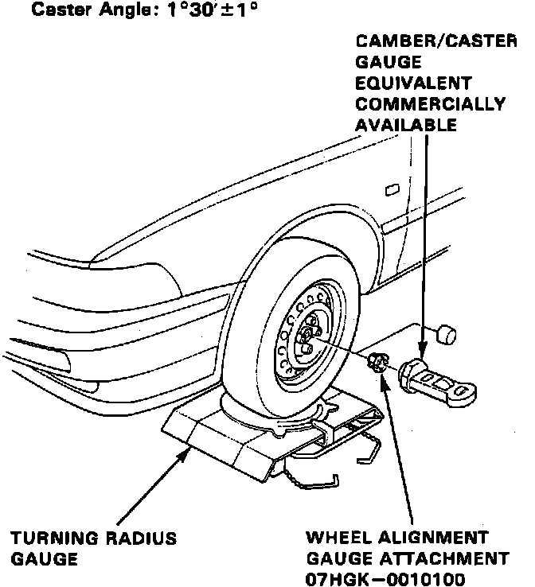
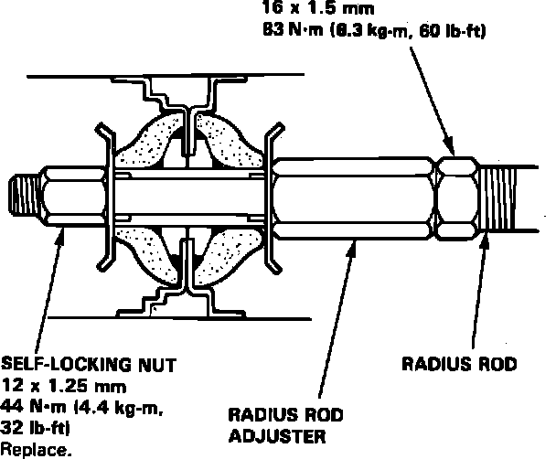

Caster
Fig. 1 Caster Angle Check:

Fig. 2 Caster Angle Adjustment:

Ensure tires are properly inflated prior to checking or adjusting caster angles.
1. Raise front of vehicle and position turning radius gauges under front wheels, then lower vehicle.
2. Raise rear of vehicle and position wooden boards with a thickness equal to the turning radius gauge under rear wheels, then lower vehicle.
3. Remove spindle nut and install suitable caster gauge and adapter, Fig. 1.
4. Apply front brakes and turn wheels 20° inward.
5. Position caster gauge at 0°, then return wheels to straight-ahead position and note gauge reading. If caster angle is not within specifications, proceed as follows:
a. Loosen radius rod attaching bolts at lower control arm.
b. Loosen radius rod adjuster locknut and self-locking nut on end of radius rod, Fig. 2.
c. Turn radius rod adjuster in to increase caster or out to decrease caster as necessary. One complete revolution of the adjuster moves radius rod .049 inch and changes caster 14/60°.
d. Tighten radius rod attaching bolts, adjuster locknut and self-locking nut, then recheck caster angle.